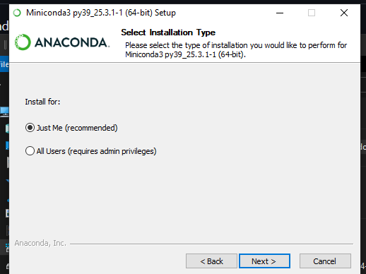
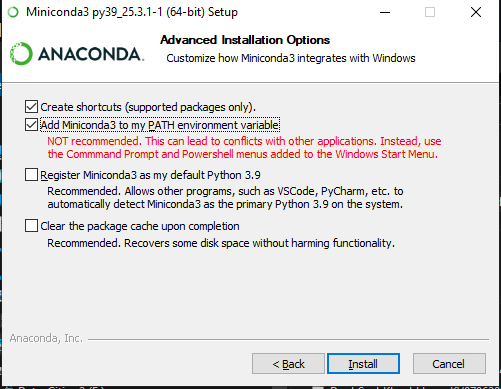

✨ Key Features
🔥 Real-time Translation
Use locally running EasyOCR or PaddleOCR for automatic real-time translation. Supports chat windows for visual novels and full-screen translation.
🤖 Advanced AI Translation
Support for multiple LLMs: Gemini, ChatGPT, Ollama, and Google Translate. Context-aware translation for higher accuracy.
🎯 Smart Recognition
Optimized translation for specific games, considering previous context and recognizing character/place names.
🔊 Additional Features
Text-to-speech functionality and ability to translate 100% locally with Ollama.
📝 Text Overlay Translation
Display translated text over the original text in the selected translation area (Currently works only on Windows 11).
🎮 Optimized for Games
By providing information about the game being translated and previous context, translations are more accurate than other methods.
⚠️ Important Notes
- System Requirements: Windows 10 or higher (Windows 11 for text overlay feature). Games need to be in windowed, fullscreen borderless, or windowed borderless mode.
- Recommended Hardware: NVIDIA GPU for best performance.
- Conda Installation: Add conda to the PATH environment variable and install conda with the "Just me" option.
- CPU Performance: Without an NVIDIA GPU, you'll use 30-50% CPU capacity (if choosing EasyOCR or PaddleOCR).
- OCR Choice: Windows OCR (recommended for AMD and Intel GPUs) is lighter but less effective for games and only supports English as source language. EasyOCR and PaddleOCR are better.
- Translation Area: The smaller the translation area, the faster the translation speed.
- Privacy: The software only checks GitHub for version updates. Cloud services (Gemini, ChatGPT) will see the content being translated. Ollama keeps everything local.
🚀 Installation and Usage (Windows)
Prerequisites:
- Download the latest version (zip file) here and extract it.
- Check if you have Conda installed by opening a command window (press
Win + R, typecmd, and press Enter) and typing "conda". If it shows conda commands, you have it installed. If it shows an error, install Miniconda here. - When installing conda, select "Just me" in the installation (don't select "All users") 
- Make sure to add conda to the PATH environment variable (important) 
- Note: When running .exe files, you might get a message saying "This is dangerous, don't run it" because this project is open source and I don't have any digital signatures, so you'll have to trust me and click on "More info" and run it. This message only appears the first time for each .exe file.
How to Use:
- Run RSTGameTranslation/rst.exe to start the application
- Settings:
- Go to settings, Language tab, select the language you want to translate from and the language you want to translate to
- Go to the Translation tab, select the translation service you want to use
- Go to the OCR tab, select the OCR method you want to use
- Now you can close the settings window
- Server Setup (Only do once for each OCR method):
- Click the SetupServer button to start setting up the server based on the OCR method you selected in settings (If you selected Windows OCR, you can skip this step)
- Setup can take 5-15 minutes, depending on your internet speed and computer power
- Wait until the server setup is complete, you will see a message "... environment setup completed"
- Start Translating:
- Click the StartServer button and wait until you see the message "Successfully connected to .... server" (If you selected Windows OCR, you can skip this step)
- Select translate region (ALT+Q or Click on SelectArea button)
- Click Start button (ALT+G) to begin translation
- Translation results are displayed in the chat window (ChatBox button, ALT+C) or in the Monitor (Monitor button, ALT+F, requires Windows 11)
- LLM Setup:
- Go to settings and add your Gemini API key. There are instructions on how to get the API key there.
- You can enter multiple API keys, press Enter after entering each API key.
- Check the other settings; the default values should be fine. Note that there is a place to enter the name of the game, which is important! The LLM knowing this will help it fix errors and create better dialogue.

Note: You can use source_language and target_language in the prompt, the application will automatically map the languages to the language codes you selected in the settings. For example: if you select source_language=en and target_language=vi in the settings, the prompt sent to the LLM will be converted to "English" and "Vietnamese" before sending to the LLM automatically.
The first time you use EasyOCR or PaddleOCR with a new language, it has to download first! So it might seem like it's not working, just wait a minute or two and start/stop the application's translation, it will work.
🔄 How to Update
RSTGameTranslation will automatically check for updates when you start it. If there's a new version, you'll see a notification asking if you want to download it. To update:
- Download the latest version from the notification or from here
- Close RSTGameTranslation if it's running
- Extract the new files to your current installation folder
- Done! Your settings and options will be preserved
- The update process is simple and safe - you won't lose any settings or customizations.
⌨️ Shortcuts
| Shortcut | Function | Notes |
|---|---|---|
| Alt+G | Start/Stop OCR | Works globally |
| Alt+Q | Select Translation Area | Works globally |
| Alt+F | Show/Hide text overlay mode | Works globally |
| Alt+C | Show/Hide ChatBox | Works globally |
| Alt+P | Show/Hide Settings | Works globally |
| Alt+L | Show/Hide log panel | Works globally |
⚙️ Advanced Settings
Recommended Settings
- OCR: PaddleOCR (Better for Asian languages, uses fewer resources)
- LLM: Gemini Flash 2 Lite (Fast and accurate)
- For AMD, Intel users: Consider using Windows OCR if you don't want to lose CPU performance (Accuracy will be lower)
Alternative Options
- Windows OCR: Lightweight but less accurate for games
- Ollama: 100% local translation (RTX 4090: ~5 seconds/translation)
- ChatGPT: GPT-4.1 Nano for premium results
Performance Tips
- Smaller translation area = faster processing
- NVIDIA GPU highly recommended
- First-time language downloads may take 1-2 minutes
- The app will automatically change API keys if the previous API gets rate-limited, so you should input as many API keys as you can
While I personally recommend Gemini Flash 2 lite and PaddleOCR (better for Asian languages and uses fewer resources), there are various options available to you. You can use Windows' built-in OCR instead of the python server, which doesn't work as well for Japanese but might be fine for other languages.
For Ollama, install it and set up a model like gemma3:12b. On an RTX 4090, it takes about 5 seconds to return a translation. (installation has instructions and buttons to start)
All OCR is done at the character level. Then there's a "Block detection" function that combines characters together to form words and paragraphs. You can adjust the "Block Power" to make it more likely to combine things together or separate them.
❓ Frequently Asked Questions (FAQ)
What languages can RSTGameTranslation translate?
The software can translate most languages, but it's primarily tested with Japanese to English and English to Vietnamese translations.
I don't have an NVIDIA GPU, can I still use it?
Yes, but performance will be much lower as it will use CPU (30-50% capacity). You can try using Windows OCR for lighter performance.
Can I use RSTGameTranslation without an internet connection?
Yes, you can use Ollama to run 100% offline. You'll need to download the LLM model to your machine first.
How do I get a Gemini API key?
You can sign up for a free Gemini API key at Google AI Studio. After logging in, you can create an API key in the settings section.